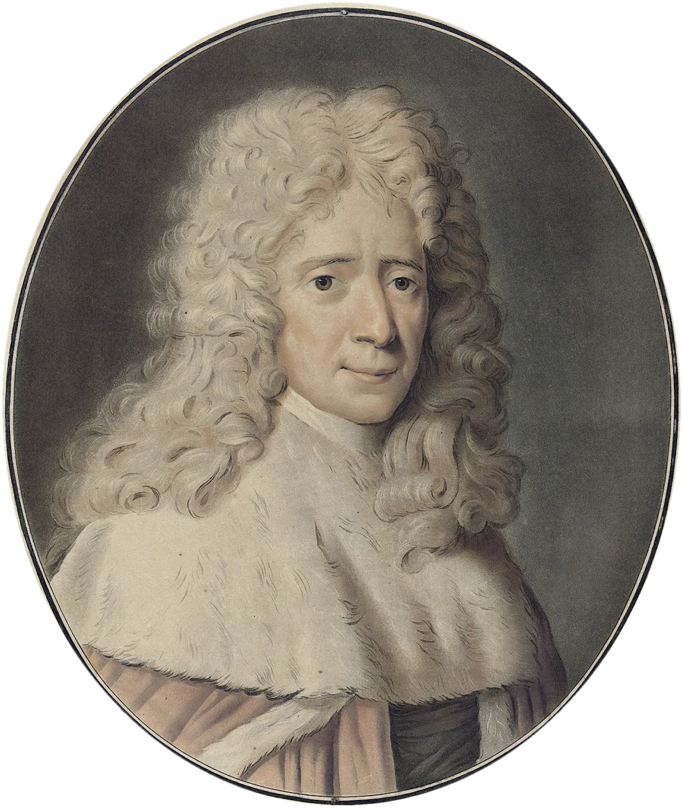

Temática: Montesquieu · A circulação das ideias e saberes franceses na ciência jurídica brasileira
Montesquieu and the three powers
Political liberty, legal images, and institutional autonomy in Brazil

A circulação das ideias e saberes franceses na ciência jurídica brasileira
Serge Dauchy (CNRS/Université de Lille)
Marja Mangili (UniCesusc)
Ana Vitória Vanzin Mendes (UFSC)
11 de novembro de 2026 15h10
UFSC · FLORIANÓPOLIS
Universidade Federal de Santa Catarina · PPGD
11 November 2026 · Panel on Montesquieu (~10-minute intervention)
TEMÁTICA: Montesquieu · Conferencista: Serge Dauchy (CNRS/Univ. de Lille) · Debatedores: Marja Mangili (UniCesusc) & Ana Vitória Vanzin Mendes (UFSC) · 11 Nov. 2026 · 15h10 · CCJ/UFSC
Political liberty, legal images, and institutional autonomy in Brazil
Aligned with the 7-slide Montesquieu Lectern Script (~9m30s), this response moves from Montesquieu’s judicial role in the Parlement of Bordeaux and De l’esprit des lois (1748, Book XI, ch. 6) to Brazil’s 1824 Constitution (Art. 10; Dauchy § 6) and Serge Dauchy’s emphasis on civil and criminal laws, judicial institutions, and renegotiated boundaries (§§ 7, 11–14).
Slide 05 examines Aurélio de Figueiredo’s Compromisso Constitucional (1896, representing the oath of 26 February 1891; Museu da República · Reproduction: Romulo Fialdini) alongside Articles 15 and 44 of the 1891 Constitution. Slide 06 examines Alfredo Ceschiatti’s A Justiça (1961; Supremo Tribunal Federal · Photograph: Fellipe Sampaio / STF) alongside Rafael Simioni’s study on autonomy.
Full verbatim lecture notes with bold sentence lead-ins and silent slide-change cues are available in the Lectern Script reader (press L or print as a 7-page A4 packet), synchronized with each slide’s top-right Presenter Tip (N) and the Smartphone Remote (R).
DAUCHY, Serge. « Montesquieu, De l’esprit des lois (1748) » — Conference paper presented at A circulação das ideias e saberes franceses na ciência jurídica brasileira, PPGD/UFSC, 11 November 2026, esp. paragraphs 6, 7, and 11–14.
MONTESQUIEU, Charles-Louis de Secondat, Baron de. De l’esprit des lois (1748; 1777 ed.), esp. Book XI, chapter 6. Reference text: Wikisource · De l’esprit des lois (1777).
BRAZIL. Constituição Política do Império do Brazil (25 March 1824), Article 10 (Legislative, Moderating, Executive, Judicial); Constituição da República dos Estados Unidos do Brasil (24 February 1891), Articles 15 and 44. Câmara dos Deputados: Constitutional Archive.
MUSEU DA REPÚBLICA. Catalogue entry for Aurélio de Figueiredo, Compromisso Constitucional, 1896 (Represents Deodoro da Fonseca’s oath of 26 February 1891 before Prudente de Moraes and the Constituent Congress; oil on canvas, 330 × 257 cm; reproduction credit: Romulo Fialdini): Museu da República · Acervo Museológico.
SUPREMO TRIBUNAL FEDERAL (STF). 130 anos: conheça os destaques do acervo cultural do STF — Alfredo Ceschiatti, A Justiça, 1961 (Supremo Tribunal Federal, Praça dos Três Poderes, Brasília; granite, 3.30 m; photograph credit: Fellipe Sampaio / STF): STF · Acervo Cultural.
SIMIONI, Rafael Lazzarotto. Study on Alfredo Ceschiatti’s sculpture A Justiça (STF, Brasília) and the iconography of judicial autonomy (engaged on Slide 06 alongside Arno’s conference prompt).